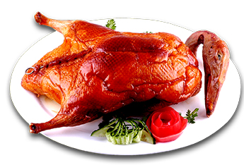

鲁菜lu cuisine
中华美食
世界这么大，美食那么多，不吃起来，怎对得起大好青春！
地址：重庆市南岸区崇文路2号
电话：18555556435

糖醋鲤鱼是山东济南传统名菜，据说最早始于济南黄河重镇——泺口镇。 济南北临黄河，黄河鲤鱼不仅肥嫩鲜美，而且金鳞赤尾，形态可爱，是宴会上的佳肴。黄河鲤鱼的肉味纯正，鲜嫩肥美，《济南府志》上早有“黄河之鲤，南阳之蟹，且入食谱”的记载。 成菜后，色泽金黄，外焦内嫩，酸甜可口，香鲜味美
德州扒鸡，为五香脱骨扒鸡的俗称，是山东省德州市特产之一。其口味鲜咸香嫩，造型别致美观，肉嫩骨酥，一抖之下骨脱肉烂，故名脱骨扒鸡。其外型完整美观，色泽金黄透红，肉质松，软适口，具有健胃、补肾、助消化等功能。“德州扒鸡”在烧鸡的基础上，借鉴了扒肘子、扒牛肉的烹制方法。
 德州扒鸡中华美食
世界这么大，美食那么多，不吃起来，怎对得起大好青春！
地址：重庆市南岸区崇文路2号
电话：18555556435